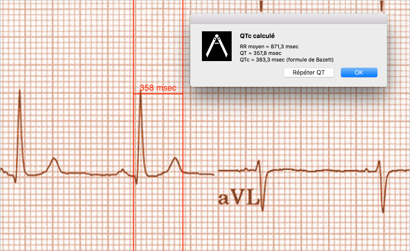
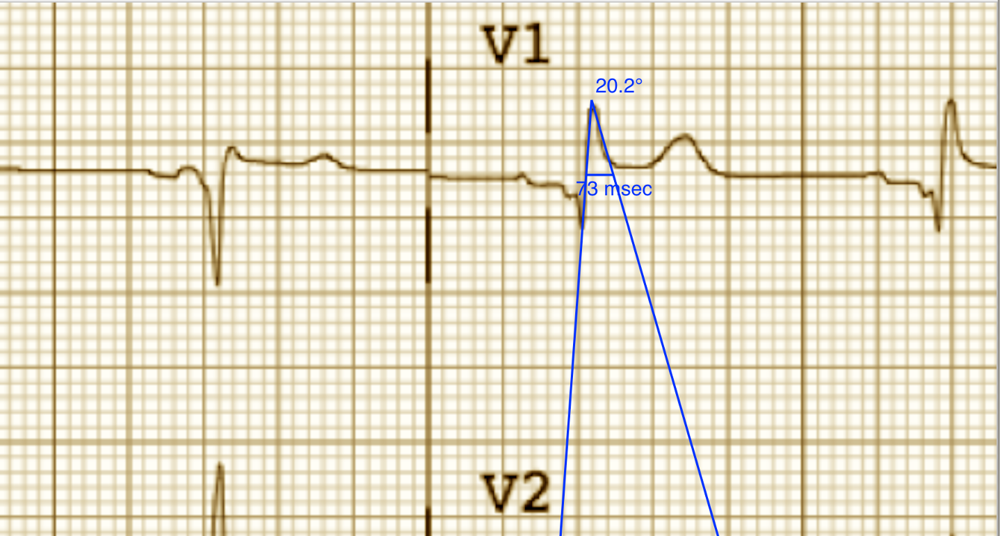

Prendre des mesures
Prendre des mesures
L’intervalle du compas
L’intervalle mesuré par chaque compas est indiqué au dessus ou à coté de la barre transversale du compas. Avant l’étalonnage des compas, les mesures sont indiquées dans des unités arbitraires (des points, égals environ aux pixels d’écran). Les compas d’angle montrent l’angle mesuré en degrés et il ne faut pas de les étalonner.
Invites sur écran
Si la préférence Des messages-guides est choisi l’application vous guidera avec des instructions détaillées sur comment on prend chaque mesure. Après que vous apprenez comment faire les mesures vous pouvez désactiver cette préférence pour réduire le nombre des messages-guides. Des messages-guides se montrent sure un fenêtre flottante. Par exemple, en mesurant l’intervalle RR moyen et la fréquence cardiaque moyenne, si la préférence Des message-guides est activée, l’application va d’abord vous inviter à choisir un compas de temps, puis l’étendre sur un nombre d’intervalles, et enfin cliquer RR moyen sur la barre d’outils. Une boîte de dialogue apparaîtra et demandera combien d’intervalles sont mesurés. Après l’entrée du nombre et avoir cliqué sur le bouton Calculer, le résultat apparaîtra. Si la préférence Des messages-guides est désactivée, vous pouvez choisir un compas et l’étendre sur un nombre d’intervalles sans messages-guides, et puis appuyer le bouton RR moyen ou la commande de menu Mesures | Intervalle moyen/Fréquence moyenne. Le resultat sera le même.
Étalonnage
Il faut étalonner des compas avant que des mesures peuvent être faire. Si la préférence Des message-guides est activée, appuyer le bouton Étalonner ou choisir la commande de menu Compas | Étalonner. Suivre les invites sur écran pour choisir un compas et l’étendre sur un intervalle connu (p.e. 1000 msec pour un compas de temps ou 10 mm pour un compas d’amplitude). Appuyer encore le bouton Étalonner. Dans la boîte de dialogue qui apparait, assurer-vous que l’intervalle correspond à la mesure. Saisir l’intervalle d’étalonnage et les unités (les deux), p.e. 1000 msec ou 1 mV. Appuyer le bouton Étalonner dans la boîte de dialogue pour fixer l’étalonnage. Noter qu'il faut que les compas de temps et d'amplitude soient étalonnés individuellement. Après l'étalonnage, les compas montreront les intervalles avec les unités utilisées pour les étalonner. Des nouveaux compas créés utiliseront le même étalonnage.
Si vous n’utilisez pas de messages-guides, alors choisir et étendre un compas sur l’intervalle que vous voulez pour l’étalonnage, appuyer le bouton Étalonner dans la barre d’outils, et saisir l’intervalle d’étalonnage.
Il est important d’utiliser des unités de temps comme msec ou sec en étalonnant un compas de temp si vous voulez faire des mesures tels que l’intervalle QT corrigé. En d’autres mots, taper le texte 1000 msec et pas seulement 1000. Les intervalles d’étalonnage qui sont négatifs sont traités comme les nombres positifs, c’est-à-dire le signe négatif est ignoré.
Changement de l’étalonnage
Vous pouvez réétalonner à tout moment. L'étalonnage peut être complètement effacé en choisissant Effacer sur le menu d'étalonnage. Noter que l'étalonnage continue quand l'image est zoomée. La sélection d'une nouvelle image ou le changement du mode à la fenetre transparente effacera l'étalonnage. Si vous voulez tourner l’image, vous devez d’abord effacer l’étalonnage.
Intervalle/fréquence
Après qu'un compas de temps est étalonné, si vous utilisez des unités du temps (par exemple msec ou sec) pour l'étalonnage, il est possible d'alterner entre les mesures d'intervalle (par exemple 600 msec) et les mesures de fréquence cardiaque (par exemple 100 bpm) en choisissant le bouton Int/Fréq ou la commande de menu Mesures | Alterner intervalle/fréquence.
Calcul de la fréquence moyenne et de l'intervalle moyen
Sélectionner un compas étalonné et mesurer un nombre d'intervalles. Choisir le bouton Int/Fréq et saisir le nombre d'intervalles mesurés. Une boîte de dialogue montrera la fréquence cardiaque moyenne calculée et l'intervalle moyen. Cela est utile pour le calcul des fréquences et des intervalles pendant un rythme irrégulier, par exemple la fibrillation auriculaire.
Calcul du QT corrigé
La mesure de QTc est un procédé en plusieurs étapes et donc les messages-guides se montrent toujours. Choisir le bouton QTc ou la commande de menu Mesures | QTc. Étendre le compas sélectionné sur un ou plusieurs intervalles RR et puis choisir encore le bouton QTc. Saisir le nombre d'intervalles étant mesurés et puis choisir encore QTc. Utiliser le même ou un autre compas sélectionné pour mesurer l'intervalle QT. Choisir encore le bouton QTc. Une boîte de dialogue montrera le QT calculé en utilisant la formule de Bazett par défaut. Choisir Répéter QT pour faire une nouvelle mesure du QT avec le même intervalle RR, ou choisir OK pour terminer. On peut changer la formule en utilisant les préférences.

Figure 1: Mesure du QTc
Brugadometer
Le Brugadometer est un outil de diagnostic, utilisé pour l'analyse du syndrome de Brugada. Cet outil a été développé en collaboration avec Dr. Adrian Baranchuk et ses collègues à l'Université Queens, Kingston, en Ontario. Le Brugadometer peut distinguer entre un bloc de branche droite incomplète, et un motif du syndrome de Brugada aux fils V1 ou V2. Pour utiliser le Brugadometer, il faut étalonner un compas de temps en msec ou mm et un compas d'amplitude en mm. Ensuite, un compas d'angle apparaîtra avec un triangle au sommet comme ceci.

Figure 2: Brugadometer avec une base de triangle 5 mm au-dessous du sommet de le compas
La base du triangle sera localisée à 5 mm au-dessous du sommet du triangle. L'alignement correct de ce triangle avec l'onde r' pour un individu soupçonné d'avoir le syndrome de Brugada donnera la mesure de l'angle beta et la mesure de la base du triangle 5 mm au-dessous du sommet. Une base de triangle qui est > 160 msec (4 mm à une vitesse standard de 25 mm par seconde) suggère la présence du syndrome de Brugada. Voici de Luna AB, Garcia-Niebla J, Baranchuk A. New electrocardiographic features in Brugada syndrome. Curr Cardiol Rev. 2014 Aug; 10(3): 175-180 pour plus d'informations.